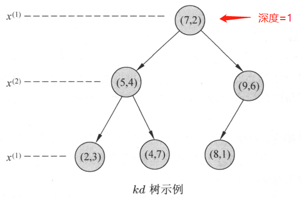
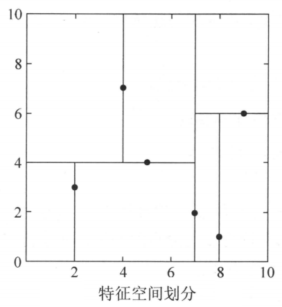
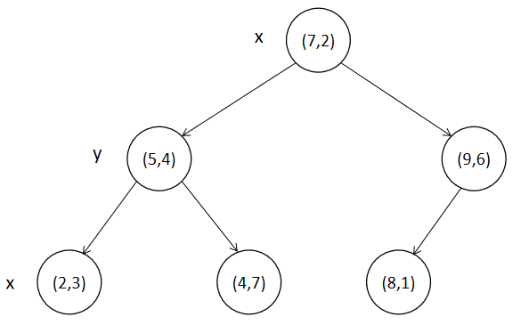
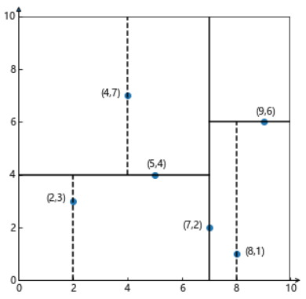
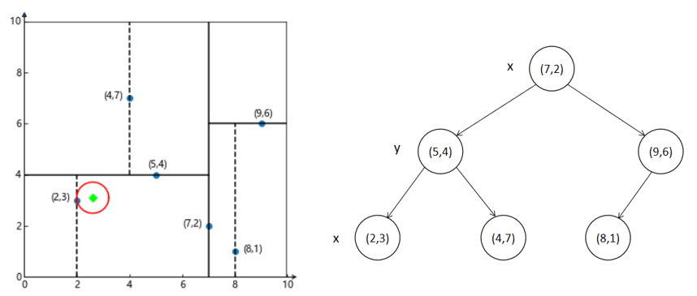
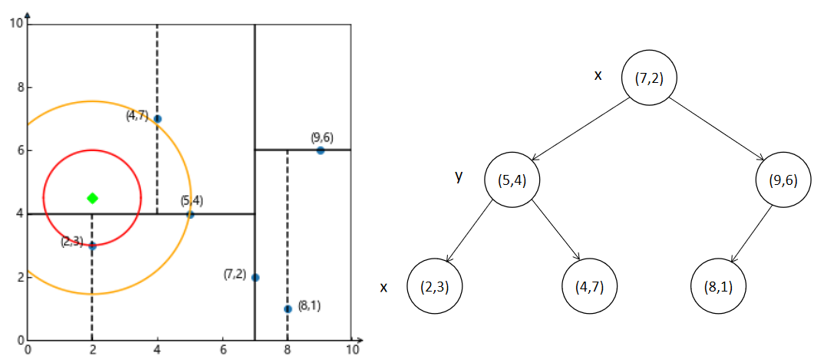

k近邻2021-09-17
k近邻算法
k近邻算法（k-nearest neighbor，k-NN）简单、直观：给定一个训练数据集，对新的输入实例，在训练数据集中找到与该实例最邻近的k个实例，这k个实例的多数属于某个类，就将该类别作为输入实例的预测类别。
k近邻模型
k近邻算法中，当训练集、距离度量、k值及分类决策规则（如多数表决）确定后，对于任何一个新的实例，它所属的类唯一地确定。
距离度量
常用的是欧式距离、曼哈顿距离。
k值的选择
k值越小，越容易过拟合，即模型越复杂。
k值越大，最大为N，即无论输入任何实例，都将简单地预测它属于在训练实例中最多的类，即模型越简单。
实际中如何选择？先取较小的数，然后使用交叉验证来选择最优的k值。
分类决策规则
常用的是多数表决规则。
多数表决规则有如下解释：如果分类的损失函数是0-1损失函数，分类函数为 。那么误分类的概率是：
对给定的实例，其最近邻的k个训练实例点构成集合。如果涵盖的区域的类别是（真实标签），那么误分类率是：
要使误分类率最小，即经验风险最小，就要使最大，如多数表决规则所述。因此，多数表决规则等价于经验风险最小化。
kd树
为了提高k近邻搜索的效率，可以考虑使用特殊的结构存储训练数据，以减少计算距离的次数。具体方法很多，比如kd树方法。
构造kd树
kd树是一种对k维空间中的实例点进行存储以便能够快速检索的树形数据结构。kd树是二叉树，表示对k维空间的一个划分。构造kd树相当于不断地用垂直于坐标轴的超平面将k维空间划分，构成一系列的k维超矩形区域。
通常，依次选择坐标轴对空间切分，选择训练实例点在选定坐标轴上的中位数作为切分点，这样得到的kd树是平衡的。但是，平衡的kd树搜索时效率未必是最优的。
。
给定一个二维空间的数据集，构造一个平衡的kd树。


搜索kd树
利用kd树可以省去大部分数据点的搜索，从而减少搜索的计算量。以最近邻搜索为例，对算法进行描述。
kd树搜索例题
已知树形图如下：

划分图如下：

请对点(2.6, 3.1)和点(2, 4.5)分别进行最近邻结点的搜索。
点(2.6, 3.1)搜索

如上图所示，绿色的点为目标点。
- 寻找叶子结点：搜索路径为{(7. 2) , (5, 4) , (2, 3)}，最终定位属于叶子结点(2, 3)。
- 以(2, 3)作为当前最近邻点，计算其到查询点(2.6, 3.1)的距离为0.6083。
- 回溯到父节点(5, 4)，并判断在父结点的其它子结点空间中是否有距离目标点更近的数据点。以(2.6, 3.1)为圆心，以0.6083为半径画圆，发现该圆并不和超平面y=4相交，因此不用进入(5, 4)结点的右子结点空间中进行搜索。
- 再回溯到(7. 2)，以(2.6, 3.1)为圆心，以0.6083为半径画圆不会与x=7的超平面相交，因此不用进入(7. 2)的右子结点空间进行搜索。
- 搜索完毕，返回最近邻结点(2, 3)，最近邻距离为0.6083。
点(2, 4.5)搜索

- 寻找叶子结点：搜索路径为{(7, 2) , (5, 4) , (4,7)}，最终定位属于叶子结点(4, 7)。
- 以(4, 7)为最近邻点，计算与目标点(2, 4.5)之间的距离为3.202。
- 回溯到 (5, 4)，计算与目标点(2, 4.5)之间的距离为3.041，因此 (5, 4)为当前的最近邻点。
- 以(2, 4.5)为圆心、3.041为半径画圆（上图橙色圆），可见该圆与超平面y=4相交，因此需要进入 (5, 4)结点的左子结点(2, 3)进行搜索，此时搜索的路径为{(7, 2) , (2, 3)}
- 回溯至(2, 3)叶子结点，(2, 3)距离目标点(2, 4.5)的距离为1.5，所以当前的最近邻结点为(2, 3)。
- 回溯至(7, 2)结点，以(2, 4.5)为圆心、1.5为半径画圆（上图红色圆），并不和x=7超平面相交，因此，不需要进入(7, 2)的右子结点进行搜索。
- 搜索完毕，返回最近邻结点(2, 3)，最近邻距离为1.5。